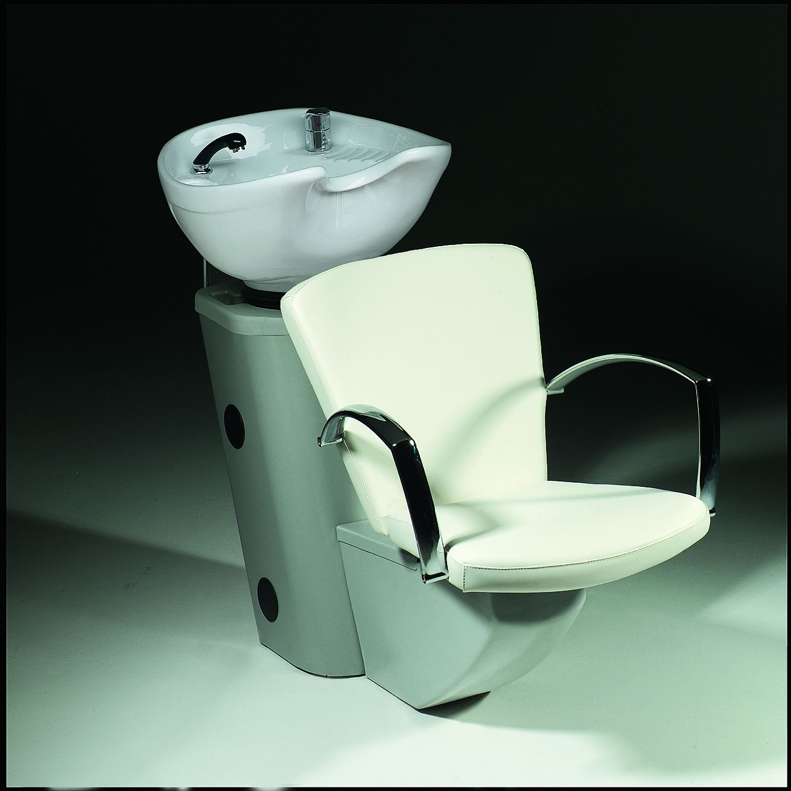

Kapcsolat

Fodor Viktória női fodrász
Bodor Viktor férfi fodrász
Elérhetőség:
- Tel: +36 20 999 99 99
- E-mail: fodorbodor@fodraszat.hu
- Cím: 1000 Budapest, Fodor Bodor tér 25.
Bejelentkezés:
telefonon vagy az
on-line felületünkön
Munkaidő:
a páros heteken délután: 13h – 22h
a páratlan heteken délelőtt: 07h – 16h
Megközelíthetőség:
Az üzlet mind autóval, mind tömegközlekedési eszközökkel rendkívül könnyen elérhető.